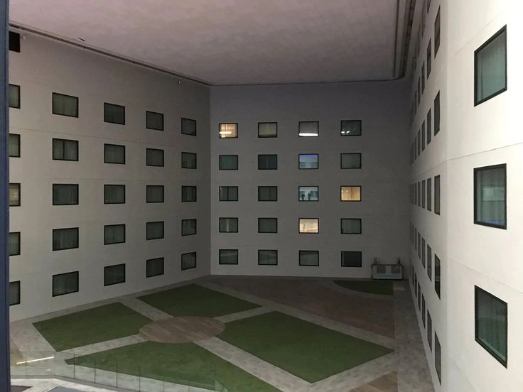
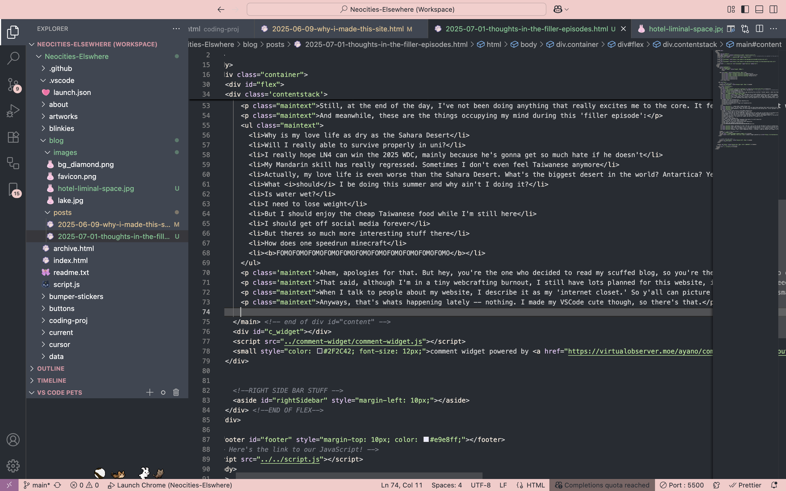

thoughts in the filler episode
01/07/2025
I watched a video a while ago analyzing the so-called 'liminal spaces'; about why they evoke such eerie sense of nostalgia and, in my opinion, creepiness (One of my friends said he find liminal spaces calming, which I just can't agree). The video explains that the theme most liminal spaces share in common is that they represent a 'transition of places,' be it a literal hallway leading from one room to another, or some places you'll be at in between travels, like a hotel, or even the transitional spaces between periods of one's life.
Holiday Inn at London Heathrow Airport; a well known example of liminal spaces. Sources: Pinterest
In a sense, I feel like my life is stuck in a liminal space right now. I've graduated high school a month back, except it's not just my high school, but a school I've been attending since 5th grade. Every time I go on vacation, short or long, I always expect to come back to the same campus and the same classrooms eventually. But last month, after I walked across the stage and threw my cap and took a bunch of photos, it's all done.
Just a few months back I would've given everything to escape that fuckass school. I felt suffocated in that environment, and I couldn't wait to book the hell out and head to uni in London. Don't get me wrong, I'm still not anyless happy that I'm out. It's just that summer break is less fun-in-the-sun and beachy hangouts and more just waiting for my next 'storyline' to start. It's somewhat like a filler episode between one big period of my life and another.
I've been spending time doing a few side quests so far. Aside from building this site, I have:
- Made vlogs on instagram
- Started a tutoring job that pays decently
- Passed my driving test
- Started volunteering at a legal aid foundation
- Read more
... among other random things.
Still, at the end of the day, I've not been doing anything that really excites me to the core. It feels like I'm just waiting for September to roll around and start the next stage of my life.
And meanwhile, these are the things occupying my mind during this 'filler episode':
- Why is my love life as dry as the Sahara Desert
- Will I really able to survive properly in uni?
- I really hope LN4 can win the 2025 WDC, mainly because he's gonna get so much hate if he doesn't
- My Mandarin skill has really regressed. Sometimes I don't even feel Taiwanese anymore
- Actually, my love life is even worse than the Sahara Desert. What's the biggest desert in the world? Antartica? Yeah, that
- What should I be doing this summer and why ain't I doing it?
- Is water wet?
- I need to lose weight
- But I should enjoy the cheap Taiwanese food while I'm still here
- I should get off social media forever
- But theres so much more interesting stuff there
- How does one speedrun minecraft
- FOMOFOMOFOMOFOMOFOMOFOMOFOMOFOMOFOMOFOMOFOMO
Ahem, apologies for that. But hey, you're the one who decided to read my scuffed blog, so you're the one that have to endure my digital tomfoolery.
That said, although I'm in a tiny webcrafting burnout, I still have lots planned for this website, including some reccomendation page about stuff I like and scuffed mini games (if you can even call them that).
When I talk to people about my website, I describe it as my 'internet closet.' So y'all can picture me sitting in a small closet covered by all the random shit I've made or liked.
Anyways, that's whats happening lately -- nothing. I made my VSCode cute though, so there's that.
This post in VSCode. I've been quite a sucker for pink lately.